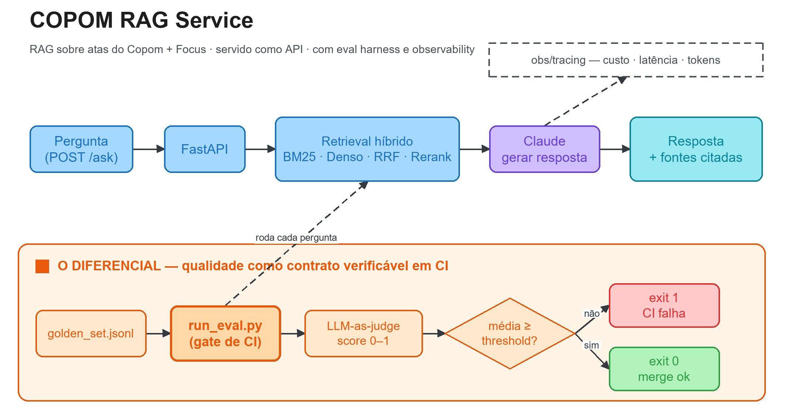

flowchart LR
subgraph Ingestao["Ingestão — API do BCB"]
ATAS[(48 atas completas<br>reuniões 232–279)] --> ING["ingest.py"]
FOCUS[(Focus na véspera<br>de cada reunião)] --> ING
ING --> CORP[("corpus.jsonl<br>862 chunks<br>814 atas + 48 Focus")]
end
Q[POST /ask<br>pergunta] --> API[FastAPI]
API --> PIPE[RAGPipeline]
subgraph Retrieval["Retrieval híbrido"]
CORP --> IDX["indexing_text()<br>+ ata · reunião · data"]
IDX --> BM25["BM25<br>esparso"]
IDX --> DENSE["Denso<br>embeddings + cosseno"]
PIPE --> BM25
PIPE --> DENSE
BM25 --> FUSE["Fusão RRF"]
DENSE --> FUSE
FUSE --> RR["Reranker<br>boost de decisão condicional"]
end
RR --> GEN["Claude Haiku 4.5<br>resposta + fontes"]
GEN -->|"sem chave"| EXT["fallback extrativo<br>degraded: true"]
GEN --> API
API --> R[resposta + fontes]
subgraph Qualidade["Eval harness — o código-âncora"]
GS[("golden_set.jsonl<br>5 fatos + 3 abstenções")] --> RUN["run_eval.py"]
RUN --> PIPE2[RAGPipeline]
PIPE2 --> JUDGE["Claude Sonnet 5<br>self-consistency (N=3)<br>mediana + voto maioria"]
JUDGE --> GATE{"média ≥ threshold?"}
GATE -->|não| FAIL["exit 1 — reprova"]
GATE -->|sim| PASS["exit 0 — passa"]
end
API -. custo · latência · tokens · degraded .-> OBS["obs/tracing<br>sink JSONL"]
JUDGE -. .-> OBSCOPOM RAG Service — RAG sobre Atas do Copom + Focus, Servido como API com Eval Harness e Observability
Python
FastAPI
Docker
RAG
LLM
Anthropic Claude
BM25
RRF
Reranking
LLM-as-judge
Self-consistency
CI
Observability
Política Monetária
Banco Central
Macroeconomia
Serviço de RAG sobre 48 atas do Copom e o Focus (862 chunks), exposto como API (FastAPI + Docker), com eval harness — golden set + LLM-as-judge com self-consistency + gate que falha se a qualidade regride — e observability de custo, latência e tokens por request. Motor implementado: gate em 1,000 com zero alucinações, 31 testes verdes.

ImportantEstado atual — motor implementado, gate no melhor ponto
O motor está completo e roda de ponta a ponta: retrieval híbrido real (BM25 + denso + RRF + rerank) sobre 862 chunks — 814 de 48 atas completas (reuniões 232–279) e 48 do Focus —, geração via Claude e juiz LLM com self-consistency.
| Verificação | Resultado |
|---|---|
Eval harness (--samples 3, API real) |
8/8 casos com nota 1,000 |
| Alucinações | 0 |
| Gate (threshold \(0{,}70\)) | PASSOU |
| Suíte de testes | 31 testes verdes |
O eval também roda offline e sem custo: sem ANTHROPIC_API_KEY, geração e juiz degradam para modos determinísticos (extrativo / heurístico), e a degradação é registrada no trace (degraded: true) em vez de silenciada.
O que ainda falta: plugar o gate como GitHub Action a cada PR (hoje ele roda por linha de comando), atas anteriores à reunião 232, exportador OpenTelemetry/Prometheus de fato (hoje o sink é JSONL, que é o formato que eles consomem) e embeddings via provider (hoje há fallback local).
Visão Geral
Este projeto implementa, seguindo a metodologia CRISP-DM (Cross-Industry Standard Process for Data Mining), um serviço de RAG (Retrieval-Augmented Generation) sobre as atas do Comitê de Política Monetária (Copom) e o boletim Focus do Banco Central do Brasil, exposto como API (FastAPI + Docker).
A pergunta do usuário — em linguagem natural, sobre política monetária brasileira — é respondida com fundamentação recuperada das atas e do Focus, e a resposta cita as fontes usadas. Em um domínio onde um número errado (Selic, meta de inflação, projeção) é uma falha grave, auditabilidade e ausência de alucinação são requisitos, não enfeites.
O contexto de uso imaginado é o de um departamento de pesquisa macroeconômica de banco: o objetivo é comprimir o tempo entre a fonte primária (a ata que acabou de sair) e uma leitura defensável e rastreável que a mesa de operação possa usar para posicionar em juros. Não se trata de “prever a Selic” — a convicção direcional continua sendo do economista —, mas de dar ao research e à mesa um copiloto de leitura testado e auditável. A seção de Motivação detalha os públicos-alvo e a tese de negócio.
O diferencial do projeto, contudo, não é o RAG em si — montar um RAG é tarefa de uma tarde. É a engenharia de qualidade ao redor dele:
- um eval harness com golden set, LLM-as-judge com self-consistency e um gate que falha (exit 1) se a qualidade média regride;
- observability de custo, latência, tokens e degradação por request;
- empacotamento como API + Docker, pronto para subir com um comando.
Repositório: github.com/vitorwilher/copom-rag-service · Site do projeto: vitorwilher.github.io/copom-rag-service
TipTese central
Um RAG de política monetária não se prova por uma demo bonita — prova-se por não regredir. A postura de engenharia deste projeto é tratar qualidade de resposta como um contrato verificável em CI: o golden set + LLM-as-judge produzem um score agregado, e nenhuma mudança entra sem que a média se mantenha acima do threshold. O código-âncora do card é, portanto, o run_eval.py — o gate que transforma “parece bom” em “passou ou falhou”.
Motivação
O problema de negócio: da fonte primária à leitura defensável
Imagine este projeto dentro do departamento de pesquisa macroeconômica de um grande banco brasileiro — um Itaú, Bradesco, Santander, Banco do Brasil ou Nubank. Um time de macro produz, essencialmente, três coisas: cenário (para onde vão Selic, câmbio, inflação e atividade), calls (recomendações táticas para as mesas) e atendimento a clientes internos e externos. O gargalo crônico não é ter a opinião — é a velocidade e a rastreabilidade entre “o Banco Central falou” e “a mesa agiu com base numa leitura defensável”.
O cliente interno mais crítico é a mesa de operação (juros / rates). Assim que uma ata do Copom sai, ela precisa responder, em minutos, três perguntas cujo resultado move preço:
- O que mudou no comunicado/ata em relação ao anterior — forward guidance, balanço de riscos, assimetria do cenário;
- Isso confirma ou contradiz o que o mercado já espera — o gap entre a comunicação do Copom e a mediana do Focus é, literalmente, fonte de alfa para uma posição em DI/pré;
- Qual a base textual dessa leitura — para tomar risco, a mesa precisa poder clicar na frase da ata que sustenta a interpretação.
Este serviço não substitui o economista sênior que forma o cenário; a convicção direcional (o call de “corta 50 vs. 25”) continua sendo humana. O que ele faz é industrializar a camada de leitura de fontes primárias (atas + Focus) que hoje é feita no braço, sob pressão de tempo, e cujo raciocínio raramente fica documentado. É um copiloto de leitura, não o piloto do cenário — e a diferença para um chatbot genérico é que aqui as fontes são o Copom e o Focus, versionados, e a resposta é auditável e testada.
Por que o eval harness é o que dá “licença de operar” num banco
Numa instituição regulada, uma ferramenta que gera leitura de política monetária para embasar posição de risco tem um problema óbvio: e se ela alucinar? Um economista que inventa uma frase que o Copom não disse — e a mesa monta centenas de milhões em DI em cima disso — é um incidente. O golden set + LLM-as-judge + gate de CI que reprova se a qualidade regride é a resposta institucional para “como você garante que essa coisa não me faz tomar decisão sobre fato inventado?”. Neste projeto, a engenharia de avaliação não é só boa prática de software: é governança de modelo e gestão de risco disfarçadas de código — a diferença entre um brinquedo e algo que passa no comitê de modelos.
As perguntas de engenharia por trás disso
Tecnicamente, sistemas de RAG são fáceis de montar e difíceis de manter honestos. Uma troca de modelo, um ajuste de prompt, uma mudança no chunking ou no reranker podem melhorar três respostas e piorar outras dez — sem que ninguém perceba até um usuário reclamar. O projeto responde, então, a três perguntas práticas de engenharia de LLM que espelham as três dores de negócio acima:
- Como impedir regressão de qualidade em um serviço de RAG a cada mudança?
- Quanto custa, quão rápido e quantos tokens consome cada resposta — métrica de produto num research que vive de orçamento e de SLA?
- Como garantir auditabilidade — que cada resposta seja rastreável às atas ou ao Focus que a fundamentam?
Metodologia — CRISP-DM
O projeto foi estruturado seguindo o processo CRISP-DM, adaptado ao contexto de engenharia de LLM / RAG aplicado à comunicação de bancos centrais.
| Fase | Aplicação no Projeto |
|---|---|
| 1. Entendimento do Negócio | Responder perguntas sobre política monetária com fundamentação auditável (fontes citadas) e sem alucinação numérica; definir qualidade como contrato verificável em CI |
| 2. Entendimento dos Dados | 48 atas completas (232–279) + Focus ancorado à véspera de cada reunião; jargão de política monetária e números sensíveis (Selic, projeções) |
| 3. Preparação dos Dados | Chunking em 862 unidades com proveniência; indexação esparsa (BM25) e densa (embeddings + cosseno), ambas enriquecidas com ata/reunião/data |
| 4. Modelagem | Retrieval híbrido BM25 + denso → RRF → reranker → prompt → geração via Claude, com saída estruturada (resposta + fontes) via Pydantic |
| 5. Avaliação | Eval harness: golden set de fatos ancorados e abstenções + LLM-as-judge com self-consistency + gate que falha em regressão |
| 6. Implantação | API FastAPI + Docker/compose; observability de custo/latência/tokens por request |
Arquitetura
1. Entendimento do Negócio
1.1 Problema
Servir um assistente de RAG sobre política monetária é, antes de tudo, um problema de confiabilidade. A comunicação do Copom concentra, em escolhas sutis de linguagem e em números precisos, informação relevante sobre a direção da Selic — e política monetária no Brasil é, cada vez mais, um exercício de interpretar comunicação (o Copom fala para ancorar expectativas). Uma ferramenta que leia essa comunicação de forma sistemática, testada e citável é exatamente o tipo de vantagem marginal que um research de banco persegue.
Do ponto de vista da mesa de operação, o problema é de tempo e de defesa da tese: a leitura da ata precisa sair em minutos, tornar explícito o gap entre o Copom e o Focus, e vir com a frase-fonte que a sustenta — porque é com base nela que a mesa monta a posição. Um serviço que responda a esse material precisa, então, ser fundamentado (cada resposta apoiada em trechos reais), auditável (fontes citadas) e estável (qualidade que não regride a cada mudança de prompt, modelo ou retriever).
1.2 Objetivos
- Expor um endpoint
POST /askque responde a perguntas sobre as atas do Copom e o Focus com fontes citadas; - Construir um eval harness que meça a qualidade das respostas de forma objetiva e a transforme em gate de CI;
- Instrumentar custo, latência e tokens por request;
- Empacotar tudo como API + Docker reprodutível.
1.3 Públicos-alvo (clientes internos)
O serviço é desenhado como produto de dados para clientes internos do banco. Cada público extrai um valor distinto do mesmo endpoint:
| Público-alvo | O que ganha |
|---|---|
| Mesa de rates / juros | Leitura da ata em minutos, com o gap Copom × Focus explícito e fonte clicável para tomar risco |
| Economista-chefe / cenário | Livra o time do garimpo braçal de fontes e o libera para o que é insubstituível — formar a convicção |
| Sales / clientes externos | Munição para o flash pós-Copom que sai antes do concorrente, com consistência de narrativa |
| Risco / compliance / comitê de modelos | Uma IA que não é aprovada sem passar num gate de qualidade — governança embutida, não post facto |
| Tesouraria / ALM | Sinal antecipado de trajetória de Selic para decisões de funding e hedge |
O denominador comum: uma única fonte de verdade, testada e rastreável, sobre o que o Banco Central efetivamente disse — em vez de N leituras informais e não documentadas espalhadas pelo chat do time.
1.4 Critérios de sucesso
| Critério | Meta | Situação |
|---|---|---|
| Fundamentação | Toda resposta cita ao menos uma fonte (ata/Focus) | ✅ atendido |
| Qualidade agregada | Média do LLM-as-judge \(\geq\) threshold (\(0{,}70\)) | ✅ 1,000 |
| Ausência de alucinação | Zero números inventados no golden set | ✅ 0 |
| Abstenção | Sem informação no contexto, declarar “não sei” | ✅ 3 casos testados |
| Gate de regressão | Exit 1 quando a média cai abaixo do threshold | ✅ implementado · ⏳ falta plugar no CI |
| Observabilidade | Custo, latência e tokens por request | ✅ + sink JSONL e flag degraded |
| Reprodutibilidade | docker compose up sobe a API; um comando roda o gate |
✅ + 31 testes verdes |
2. Entendimento dos Dados
2.1 Fontes
| Fonte | Origem | Dados |
|---|---|---|
| Atas do Copom | API pública do BCB | Texto integral das atas (diagnóstico, cenários, riscos, decisão) |
| Boletim Focus | API pública do BCB | Expectativas de mercado (IPCA, Selic, PIB, câmbio) |
2.2 Natureza do corpus
O material combina jargão técnico de política monetária — meta para a inflação, hiato do produto, ancoragem de expectativas, cenários de referência — com números sensíveis (meta Selic, projeções de inflação, intervalos de tolerância). Essa mistura tem duas implicações diretas para o retrieval:
- a correspondência léxica exata importa (termos técnicos, nomes de reuniões), o que motiva o componente BM25;
- a similaridade semântica também importa (paráfrases, sinônimos, perguntas em linguagem coloquial), o que motiva o componente denso.
Daí a opção por retrieval híbrido.
3. Preparação dos Dados
3.1 Ingestão e chunking
As atas e o Focus são coletados via API do BCB, limpos e segmentados em chunks com metadados de proveniência (identificador da fonte, número da reunião, data). O identificador de fonte (ex.: ata_232, focus_2020-08-05) é o que permite a citação rastreável na resposta final.
O corpus versionado tem 862 chunks:
| Origem | Chunks | Detalhe |
|---|---|---|
| Atas do Copom | 814 | 48 atas completas (seções A+B+C), reuniões 232–279 |
| Boletim Focus | 48 | 1 chunk por reunião — mediana de Selic, IPCA, PIB e câmbio vigente na véspera |
A ancoragem do Focus na véspera de cada reunião é deliberada: é a expectativa que o comitê tinha diante de si ao decidir, e é ela que permite responder à pergunta que a mesa realmente faz — qual era o gap entre o que o mercado esperava e o que o Copom fez?
3.2 Indexação em dois níveis
| Índice | Implementação | Sinal |
|---|---|---|
| Esparso | BM25 próprio, com tokenização e stopwords pt-BR | Correspondência léxica de termos técnicos |
| Denso | Embeddings + similaridade de cosseno, em memória | Similaridade semântica (paráfrases) |
O componente denso usa degradação graciosa em três níveis: OpenAI (text-embedding-3-small) se houver OPENAI_API_KEY, Google (text-embedding-004) se houver GOOGLE_API_KEY, e por fim um embedding local determinístico por hashing trick + TF, sem dependência externa nem download de modelo.
NotePor que não há vector store nesta versão
Com 862 chunks, um índice em memória resolve — a busca é instantânea e o corpus inteiro cabe folgado. Introduzir ChromaDB ou pgvector aqui adicionaria uma dependência de infraestrutura, um serviço para operar e um estado para sincronizar, sem ganho mensurável de qualidade ou latência.
A troca vale a pena quando o corpus crescer uma ou duas ordens de grandeza (atas desde a reunião 21, relatórios trimestrais, comunicados). A interface do DenseRetriever isola essa decisão: trocar o backend não toca no pipeline.
3.3 Decisões de preparação
| Decisão | Valor | Justificativa |
|---|---|---|
| Índice denso | Em memória | 862 chunks não justificam operar um vector store |
| Metadado de fonte | Obrigatório por chunk | Sem ele não há citação auditável |
| Proveniência na indexação | Prefixo com ata + data (ISO e por extenso) | Faz “ata 279” e “junho de 2026” casarem com o chunk certo |
| Fusão de candidatos | Reciprocal Rank Fusion | Combina BM25 + denso sem calibrar escalas de score |
| Atas | Seções A+B+C completas | O eval pergunta pela decisão, que está na seção C |
4. Modelagem
4.1 Retrieval híbrido com reranking
O HybridRetriever (src/rag/retriever.py) orquestra três componentes:
BM25Retriever— top-k por score BM25 (esparso);DenseRetriever— top-k por similaridade de cosseno sobre embeddings;Reranker— reordena o conjunto fundido (RRF) pelostop_nmais relevantes à pergunta (cross-encoder ou reranking via LLM).
4.2 Pipeline de geração
O RAGPipeline (src/rag/pipeline.py) executa o fluxo retrieve → montar prompt → gerar, com system prompt que exige fundamentação e proíbe invenção de números:
class RAGAnswer(BaseModel):
answer: str
sources: list[str] # fontes citadas — auditabilidade
model: str = "claude-haiku-4-5"A saída estruturada via Pydantic garante que a API sempre devolva um objeto com answer e sources.
Sem ANTHROPIC_API_KEY, o pipeline degrada para um modo extrativo determinístico em vez de falhar: devolve os trechos recuperados, marca mode="extractive_fallback" e degraded=True no trace. Isso é o que permite rodar a suíte inteira e o eval em CI sem custo e sem segredo configurado — com a degradação visível, não disfarçada de resposta normal.
4.3 API
O endpoint POST /ask (src/app/main.py) recebe {"question": "..."} e devolve {"answer": ..., "sources": [...], "model": ...}. Cada chamada é envolvida em um span de tracing (custo/latência/tokens).
5. Avaliação — o Código-Âncora
Esta é a fase que define o card. A qualidade das respostas é tratada como um contrato verificável em CI, não como impressão subjetiva.
5.1 Golden set
src/eval/golden_set.jsonl reúne 8 perguntas com gabarito e tags. A escolha do que perguntar é uma decisão de projeto, não um detalhe:
TipO eval mede fidelidade à ata, não conhecimento de macroeconomia
Um golden set conceitual (“o que é um tom hawkish?”) mediria a competência do modelo de base — e um LLM moderno acerta isso sem ler ata nenhuma. Não é o que interessa aqui. O usuário deste serviço já domina os conceitos; o que ele quer saber é o que a ata específica disse.
Por isso o conjunto tem 5 fatos ancorados em atas nomeadas — decisão de juros da ata 279 (junho/2026), da 277 (março/2026), a alta da 268 (janeiro/2025), o balanço de riscos e a caracterização do hiato do produto — e 3 casos de abstenção: uma projeção que não está nas atas, uma pergunta fora de escopo e um teste explícito de comportamento (“o que fazer quando a resposta não estiver nas atas recuperadas”).
As abstenções valem tanto quanto os acertos: num domínio onde um número inventado vira posição de centenas de milhões em DI, recusar é a resposta certa — e precisa ser testado como tal.
5.2 LLM-as-judge
src/eval/judge.py implementa um juiz LLM que, dado o trio (pergunta, resposta_gerada, resposta_esperada), emite um score contínuo em \([0, 1]\) e uma justificativa, com saída estruturada via Pydantic:
class JudgeVerdict(BaseModel):
score: float = Field(ge=0.0, le=1.0)
rationale: str
hallucination: bool = FalseO juiz penaliza fortemente números incorretos — coerente com a natureza do domínio.
5.3 Runner e gate de CI
src/eval/run_eval.py é o coração do projeto. Ele:
- lê o golden set;
- roda cada pergunta pelo pipeline (
RAGPipeline.run); - avalia cada resposta com o juiz (
Judge.score); - agrega os scores (média, mínimo, contagem de alucinações);
- imprime um relatório;
- sai com exit code 1 se a média ficar abaixo do threshold.
python -m eval.run_eval # threshold padrão (0.70)
python -m eval.run_eval --threshold 0.75 # gate customizado
python -m eval.run_eval --samples 3 # self-consistency do juizO exit code é o que torna isso um gate e não um relatório: plugado numa GitHub Action a cada PR, ele bloqueia o merge quando a qualidade regride. Essa amarração ao CI é o passo que falta — hoje o gate roda por linha de comando, com o mesmo contrato, mas a decisão de barrar o merge ainda é manual.
O gate saiu de 0,76 para 1,000 ao longo do desenvolvimento. Vale registrar o que produziu esse ganho, porque nenhuma das três decisões é sobre “melhorar o prompt” — todas são de engenharia de recuperação e de medição.
Retrieval ancorado na proveniência
Perguntas do tipo “a decisão da ata 279” ou “a reunião de junho de 2026” traziam o chunk errado: o retriever via só o texto, e o número da ata não está escrito no corpo dela. A correção foi indexar cada chunk com sua proveniência — identificador, número da reunião e data em ISO e por extenso:
def indexing_text(chunk: RetrievedChunk) -> str:
meta = chunk.metadata or {}
reuniao = meta.get("meeting", "")
data = meta.get("data", "")
extenso = _data_por_extenso(data)
return f"{chunk.source} reunião {reuniao} {data} {extenso} {chunk.text}"O .text retornado permanece limpo, sem o prefixo — a proveniência serve para encontrar o chunk, não para poluir a citação exibida.
Juiz estabilizado por self-consistency
Um juiz LLM chamado uma vez por caso tem variância suficiente para fazer o gate oscilar entre execuções sem que nada no código tenha mudado — o pior tipo de teste, o que falha por acaso. Judge(samples=N) avalia cada caso N vezes (default 3) e agrega por mediana da nota (robusta a um outlier) e voto de maioria na flag de alucinação. A justificativa reporta a dispersão, então um caso instável fica visível em vez de escondido atrás da média.
O boost de decisão que sequestrava o Focus
O reranker dá bônus a chunks que contêm o dado da decisão — o que ajuda em perguntas sobre juros e atrapalha em perguntas de mercado: “o que o Focus esperava?” trazia a ata em vez do chunk do Focus. A solução foi um conjunto de termos (_MARKET_QUERY_TERMS) que desliga o boost, deixando o chunk focus_* competir em pé de igualdade.
WarningUma nota de honestidade sobre o 1,000
Nota máxima em 8 casos é evidência de que o motor está afinado para o golden set atual — não de que o sistema é infalível. O conjunto é pequeno por ser feito à mão com gabarito verificado; expandi-lo para 30–50 casos, com adversariais, é o próximo passo natural, e a expectativa correta é que a média caia quando isso acontecer. Um gate que nunca reprova não está medindo nada.
5.4 Observability
src/obs/tracing.py oferece um context manager trace(...) que mede latência, agrega tokens (entrada + saída) e estima custo em US$ a partir da tabela de preços do modelo, por request.
Com COPOM_TRACE_FILE, cada span é gravado em JSONL, e python -m obs.tracing <arquivo> agrega a sessão por modelo e por span:
[trace] generate model=claude-haiku-4-5 lat=2.564s tok_in=2343 tok_out=165 cost=US$0.003168
[trace] judge model=claude-sonnet-5 lat=2.811s tok_in=4055 tok_out=129 cost=US$0.014100O campo que mais importa não é o custo: é o degraded. Quando o pipeline cai para o modo extrativo por falta de chave ou falha de API, isso fica marcado no trace em vez de silenciado — uma resposta pior produzida por degradação não pode passar por resposta normal. summarize_traces conta quantos spans degradaram na sessão.
6. Implantação
O serviço é empacotado como API FastAPI + Docker:
Dockerfile— imagempython:3.11-slimcom healthcheck no/health;docker-compose.yml— sobe a API; o corpus é versionado no repositório, então não há serviço de banco a orquestrar nesta versão;uvicorn app.main:appcomo entrypoint.
docker compose up --buildEstrutura do Projeto
COPOM_RAG_Service/
│
├── src/ # 1.675 linhas
│ ├── app/main.py # FastAPI, endpoint POST /ask
│ ├── rag/
│ │ ├── retriever.py # BM25 + denso + RRF + rerank (433 linhas)
│ │ ├── embeddings.py # denso: provider (.env) ou fallback local
│ │ ├── corpus.py # corpus.jsonl → RetrievedChunk
│ │ └── pipeline.py # retrieve → prompt → gerar (Claude + fallback)
│ ├── eval/
│ │ ├── golden_set.jsonl # 5 fatos ancorados + 3 abstenções
│ │ ├── judge.py # LLM-as-judge + self-consistency
│ │ └── run_eval.py # CORAÇÃO: golden set → agrega → gate exit 1
│ └── obs/tracing.py # trace() + sink JSONL + summarize_traces
│
├── scripts/
│ ├── download_atas.py # API do BCB → atas completas (desde a 232)
│ ├── download_focus.py # API Expectativas → Focus por reunião
│ └── ingest.py # → data/corpus.jsonl
│
├── data/corpus.jsonl # 862 chunks (814 atas + 48 Focus), versionado
├── tests/ # 31 testes: retriever, pipeline, judge,
│ # gate, tracing, ingestão do Focus
│
├── Dockerfile · docker-compose.yml · requirements.txt · .env.example
│
└── portfolio/
└── copom-rag-service.qmd # ESTA fichaTecnologias
| Camada | Tecnologia |
|---|---|
| API | FastAPI + uvicorn |
| Contratos / saída estruturada | Pydantic v2 |
| Retrieval esparso | BM25 próprio, tokenização e stopwords pt-BR |
| Retrieval denso | Embeddings (OpenAI / Google / hashing local) + cosseno em memória |
| Fusão e reordenação | Reciprocal Rank Fusion + reranker com boost condicional |
| Geração | Claude Haiku 4.5 (com fallback extrativo determinístico) |
| LLM-as-judge | Claude Sonnet 5, self-consistency por mediana (com fallback heurístico) |
| Observability | trace() próprio + sink JSONL + summarize_traces |
| Testes | pytest (31 testes) |
| Empacotamento | Docker + docker-compose |
| Ambiente | python-dotenv |
A separação de modelos é deliberada: Haiku gera (barato, rápido, é o que roda a cada request) e Sonnet julga (mais criterioso, roda só no eval). Nos traces da última execução, a geração custou ~US$ 0,003 por resposta contra ~US$ 0,014 por avaliação do juiz — a assimetria é o ponto.
Como Executar Localmente
Pré-requisitos
- Python 3.11+
- Chave de API da Anthropic — opcional: sem ela, geração e juiz degradam para modos determinísticos e o eval roda offline, sem custo
- Docker (opcional)
Instalação
git clone https://github.com/vitorwilher/copom-rag-service.git
cd copom-rag-service
python3 -m venv .venv
source .venv/bin/activate
pip install -r requirements.txt
cp .env.example .env # opcional: ANTHROPIC_API_KEYIngestão (o corpus já vem versionado)
python scripts/download_atas.py # API do BCB → atas completas
python scripts/download_focus.py # API Expectativas → Focus por reunião
python scripts/ingest.py # → data/corpus.jsonlSubir a API
uvicorn app.main:app --reload --port 8000 # POST /askRodar o eval harness (o gate)
PYTHONPATH=src python -m eval.run_eval --samples 3Testes e observabilidade
PYTHONPATH=src python -m pytest -q # 31 testes
# Grava cada span em JSONL e agrega custo/latência/tokens
COPOM_TRACE_FILE=traces.jsonl PYTHONPATH=src python -m eval.run_eval
PYTHONPATH=src python -m obs.tracing traces.jsonlPróximos Passos
- Gate no CI — GitHub Action rodando
run_evala cada PR e bloqueando o merge em regressão. É a peça que falta para o contrato deixar de depender de disciplina manual; tudo o que ela precisa (exit code, threshold, modo offline sem custo) já está pronto. - Golden set maior — expandir para 30–50 perguntas, com casos adversariais e mais abstenções. Com 8 casos, o 1,000 diz menos do que parece.
- Avaliação de retrieval — medir recall@k e MRR, separando “não achou o trecho” de “achou e respondeu mal”. Hoje o juiz mede só a resposta final, e as duas falhas se confundem.
- Atas anteriores à 232 — a API do BCB lista desde a reunião 21; ampliar a janela histórica.
- Exportador OpenTelemetry / Prometheus — hoje o sink é JSONL, que é o formato que esses backends consomem, mas falta o exportador de fato.
- Embeddings via provider — hoje o denso usa fallback local.
- Gap Copom × Focus como ferramenta de primeira classe — a pergunta que a mesa mais faz merece um endpoint próprio, não uma pergunta em texto livre.
Referências
- Lewis, P. et al. (2020). Retrieval-Augmented Generation for Knowledge-Intensive NLP Tasks. NeurIPS.
- Robertson, S.; Zaragoza, H. (2009). The Probabilistic Relevance Framework: BM25 and Beyond. Foundations and Trends in Information Retrieval.
- Cormack, G. V.; Clarke, C. L. A.; Büttcher, S. (2009). Reciprocal Rank Fusion Outperforms Condorcet and Individual Rank Learning Methods. SIGIR.
- Zheng, L. et al. (2023). Judging LLM-as-a-Judge with MT-Bench and Chatbot Arena. NeurIPS.
- Es, S. et al. (2024). RAGAS: Automated Evaluation of Retrieval Augmented Generation. EACL.
- Blinder, A. S.; Ehrmann, M.; Fratzscher, M.; De Haan, J.; Jansen, D.-J. (2008). Central Bank Communication and Monetary Policy. Journal of Economic Literature, 46(4), 910–945.
- Wirth, R.; Hipp, J. (2000). CRISP-DM: Towards a Standard Process Model for Data Mining.